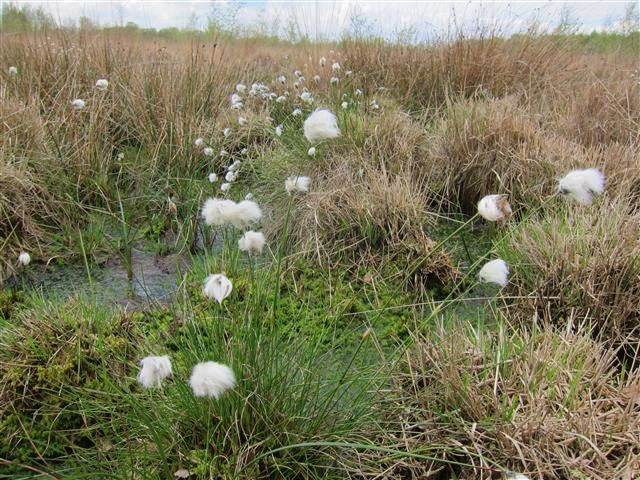

Bodem en mens
Hoe de mensen in het verleden met bodem, landbouw en landschap omgingen zegt iets over die mensen. Wanneer we daar naar kijken kun je ideeën krijgen over waar we nu naar moeten streven.
INHOUD
- Bodem, mens en landschap
- Bodems vroeger en nuBodem en religieBeken, rivieren, mensen en bodemvruchtbaarheidHet riviertje de Reest op de grens van Drenthe en Overijssel Bodem, mens en landschap
Bodem en mens in de tijd.
In het onderdeel bodemontwikkelingen wordt ingegaan op eigenschappen van bodems en landschappen. Er zijn bodems die nog bijna geheel uit zand en klei bestaan en waar weinig organische stof in zit. In het zand en de klei zitten veel mineralen die voor de plant van belang zijn en samen met het beschikbare grondwater geven deze in landbouw en landschap vaak een weelderige groei. Aan het eind van de ontwikkeling zijn met uitzondering van kiezel bijna alle mineralen verdwenen en bevat de grond wel koolstofrijke organische stof. Deze koolstofrijke organische stof is afkomstig uit de koolzuur uit de lucht en onder invloed van de zon in het warme deel van het jaar gevormd. Vanuit de vier elementen beschouwd zijn aarde (mineralen uit gesteentes) en water sterk bepalend bij de jonge gronden. Aan het eind zijn dit lucht en warmte. In het midden worden de zand en klei gemengd met organische stof en is er een wisselwerking. Deze benadering vanuit tegengestelde invloeden is te gebruiken voor keuzes in de landbouw. maar heeft in het verleden ook zijn betekenis gehad voor de relatie tussen mens en landschap. Tevens kan een en ander interessant zijn om eens te kijken naar een wenselijke toekomstige relatie tussen mens en landschap.
Een terugblik
De landbouw in Nederland is altijd sterk door bodem en landschap bepaald. Hierbij waren in de loop van de tijd duidelijke veranderingen te zien. In het volgende een beknopt overzicht.
Een van de eerste vormen van akkerbouw in Nederland vond plaats op kleine akkers op de hogere gronden in Nederland. Deze vorm van landbouw duurde tot ca. 400 na Chr.Het waren akkertjes van ca 40 x 40 m, omgeven door ruggen. Op deze plaats bevindt zich nu de heide of de heideontginning.Vervolgens ontstond het essensysteem. De akker lag op een wat hogere rug bij de beek. Naast de akker lag de boerderij en verder van de beek graasden de schapen op de heidevelden. De hooilanden lagen ook bij de beek.
Zo rond 1200 zien we dat de lagere, nattere gronden in gebruik worden genomen. De natte delen bij de beken worden hier en daar ontwaterd en bij de kust worden gronden ingepolderd.
Na 1600 is er weer een nieuwe stap. Meren worden drooggelegd. Dit begint in het westen van het land en wordt voorlopig afgesloten met de Flevopolders in de vorige eeuw.
Dit hele proces lijkt uit de techniek verklaard te kunnen worden. De heide kon door afbranden klaar voor cultuur gemaakt worden. Dit ging niet bij bossen met dikke bomen op de plaats waar nu de essen liggen. Daar was zwaarder gereedschap voor nodig. Voor ontginnen van natte gronden is de kruiwagen nodig om dijken te maken. Voor een droogmakerij is een watermolen nodig. Dit alles moet eerst beschikbaar zijn voordat een volgende stap in de ontginning genomen kan worden..
Er speelt evenwel ook nog iets anders. Niet alleen de techniek is sturend. Er moet ook een bereidheid zijn om de techniek te ontwikkelen of in te zetten . Het is voor te stellen dat het bewerken van een grond voor de mens vroeger een grote stap is geweest. Wanneer dat gebeurt, vindt dat in de eerste fase niet intensief plaats. Met een eergetouw (stok met metalen punt) werd de grond alleen oppervlakkig gewoeld en dat gebeurde alleen op bodems die ‘dicht bij de kosmos’ staan. Dat wil zeggen bij de podzolgronden waar later de heidevelden zouden komen. Hier vinden we de ‘Celtic fields’. Pas later, zo tussen 700 en 1000 na Chr. ontstaat het essensysteem. De akker ligt dan al wat lager: juist tussen het licht van de heide en de duisternis van het broekbos in. Interessant is dat deze ontwikkeling samenviel met de intrede van het Christendom in Europa. Het is mogelijk een parallel te trekken tussen het gaan wonen tussen de ‘lichte’ hei en het ‘donkere’ broekbos en het vinden van een evenwicht tussen licht en duisternis als christelijke impuls was. Vervolgens werden nattere gebieden ontgonnen. Hierbij speelden de Cisterciënzers een belangrijke rol. Ook bij hen speelde het ‘licht brengen in de duisternis’.Na 1600 ontstaat er een ander bewustzijn en wordt de techniek volop ingezet bij droogmakerijen en vele andere polders.
De ontwikkeling in de tijd van een kleigrond gedurende een zeer lange periode blijkt precies een andere dan de ingebruikname van de gronden door de mens. Eerst worden de oude gronden in gebruik genomen, dan de midden gronden en tenslotte de jonge. De keuze van een grond geeft iets aan van de menselijke gerichtheid in een bepaalde tijd. Met het verlaten van de midden gronden is ook het bewustzijn voor de basisprincipes voor een vruchtbare bodem verloren gegaan en kon een eenzijdige aandacht voor de minerale mest ontstaan.
Nu staan we bij wijze van spreken voor de zee. Die is niet meer in te polderen. Het is een mooi moment om eens om te kijken. Zoals een bodem het beste voedsel voor de mens kan produceren wanneer de vier elementen in wisselwerking met elkaar staan, zo kan ook het landschap een goede invloed op de mens hebben wanneer in de leefomgeving de verschillende kwaliteiten regelmatig ervaren kunnen worden. Enerzijds de groei van de jonge gronden, anderzijds de rust van de oude; en tenslotte de speelsheid, de duurzaamheid die bij de wisselwerking ontstaat.Een mooi motief voor een toekomstige vormgeving van het platteland. Werken aan bodemvruchtbaarheid en werken aan een duurzaam platteland kan op dezelfde principes berusten.
Bodems vroeger en nuIn het volgende een terugblik naar de landbouw zoals die de afgelopen 1500 jaar in Noordwest-Europa op de zandgronden plaatsvond in relatie tot het landschap. Er was toen een hechte relatie tussen mens en natuur. Daar kunnen we nu veel van leren.
Het landschapDe zandgronden van Noordwest-Europa in het gebied tussen Antwerpen en Hamburg zijn globaal in te delen in drie groepen. Langs beken en kleine rivieren zien we de broekbossen die nu grotendeels zijn omgezet in grasland. Langs deze natte gronden op wat hogere dekzandruggen liggen de oude akkers, de essen. Verder van de beek of rivier af de heidevelden. De heidevelden zijn grotendeels ontgonnen en in gebruik met gras, maïs en granen. De drie gebieden onderscheiden zich onder meer door verschillen in karakter van het landschap, de fauna en het jaarritme.
Karakters van landschappen
Van links naar rechts in bovenstaande afbeelding: beekdal, es en heide
Landschap
Heide
Een open landschap door de beweiding door schapen. Voor de in cultuurname had dit gebied ook een sterk open karakter. Niet schapen, maar wilde grazers hielden het landschap deels open. Ook de bomen - berk en karige eik - laten licht door.
BeekdalDicht elzenbroekbos. Veel woekerplanten. Wanneer je door een natuurlijk elzenbos loopt, ben je constant bezig met je een weg te banen. Op de heide kon je nog eens rustig naar wolken of sterren kijken. Hier is het een dichte wildernis.
EsAkker (es in Noord-Nederland, eng in Midden-Nederland, veld in Zuid-Nederland) heeft een open karakter met zeer oude blokvormige verkaveling. De boerderijen aan de rand van de es zijn omgeven door eiken, beuken, lindes, fruitbomen.
VogelsHeide
Mezen en roofvogels.BeekdalWatervogels in de beken, weinig zangvogels.
EsHét gebied van de zangvogels, kauwen.
JaarritmeHeide
Zeer trage start in het voorjaar. Dan geleidelijk een groene kleur in hei en bomen. In de herfst geen uitbundige kleuren maar subtiel geel worden van berk en eik.
BeekdalMassief groen worden in de loop van het voorjaar. Groen blijvend tot in de herfst en dan plotseling bruin worden. Blad valt soms ook nog groen af. Geen of (afhankelijk van het jaar) nauwelijks herfstkleuren.
EsIn het voorjaar verschijnen beperkt enige bloemen. In de zomer is een subtiele bloei zichtbaar en in herfst zijn er volop herfstkleuren in vele, vaak sprekende kleuren. In de herfst verschijnen de vruchten. Het is het enige landschap met vruchten (beukennoot, eikel, fruit, bessen enz.)
De relatie met de mensHet landschap als beeld van de mens komt zo naar voren: de heide is het hoofd, het beekdal het gebied van stofwisseling en ledematen, en de es het middengebied. Bij de in cultuurname koos de mens dus voor een plek in het midden als woonplaats tussen de extremen. Ook Schad en Grossbach (1974) schetsen een vergelijkbare overeenkomst tussen mens en landschap bij hoogveen en laagveen. Hoogveen heeft zenuw-zintuigkarakter en laagveen stofwisselingskarakter. Vahle (2000) geeft een enigszins andere interpretatie. Hij noemt het gebied rond het dorp ‘stofwisseling/ledematen systeem’, wat verderop ‘ritmisch systeem’ en nog weer verder ‘zenuw-zintuig systeem’. De indeling van Vahle overlapt deels de genoemde indeling, maar sluit verder wat meer aan bij de huidige situatie en minder bij de oorspronkelijke.
De indeling volgens Vahle. Steeds verder van het dorp af: groente, graan en extensief weideland.
Literatuur-Schad, W. und I. Grossbach, 1974. Niedermoor und Hochmoor. Elemente de Naturwissenschaft 21. Dornach, Schweiz.-H.-Ch. Vahle, 2000. Die Vegetationsästhetik der Kulturlandschaft. - In: Pedroli, E. (ed.): Landscape - Our Home. Lebensraum Landschaft. - Essays über die Kultur der europäischen Landschaft als Aufgabe: 179-186. Zeist, Stuttgart.-Lees hier meer over het drieledig mensbeeld: zenuw-zintuig, ritmisch, stofwisseling.
Bodem en religieOver de band tussen bodem en mens.Het moet rond 8500 voor Christus zijn geweest dat in het Midden-Oosten de eerste zaden in de grond werden gestoken met het doel om later de aren van de uitgegroeide planten te gaan oogsten (de Munck, 2011, Wells, 2010). Het waren waarschijnlijk zaden van wilde grassen. De landbouw was begonnen en zou op veel maatschappelijke terreinen grote invloed gaan hebben. Over de rol van overheid en religie bij bodembeheer hierbij is niet zoveel bekend. Overheid en religie vormden een eenheid en uit China is bekend dat in de begintijd van de landbouw de grond in de winter niet bewerkt mocht worden. In het vroege voorjaar ging de keizer naar de voorouderstempel en bad en mediteerde daar drie dagen. Daarna nam hij een ploeg, ploegde een vore en zaaide daarin wat graan. Hierna mocht in het hele land de grond weer bewerkt worden.
De invloed van de overheid wordt concreter bij de Romeinen. De Romeinen hadden een wetgeving rond bemesting. Die bestond uit meerdere onderdelen. Zo was het bijvoorbeeld verplicht om op een dag niet meer mest uit te rijden dan er ook ondergewerkt kon worden. Het waren alle heel praktische regels die op ervaring berusten. Van een visie op bodemvruchtbaarheid kan eigenlijk niet gesproken worden.Tegenwoordig is er ook geen visie op bodemvruchtbaarheid vanuit de overheid. De vele wetgeving rond bemesting die er nu is, richt zich op het voorkomen van verontreiniging van het milieu met meststoffen of broeikasgassen; niet op een vruchtbare bodem. Wanneer de bodemvruchtbaarheid van een grond jarenlang is verwaarloosd, is het niet mogelijk het tekort aan verzorging weer te herstellen omdat dan de regels die gericht zijn op het milieu worden overschreden.De Rooms-katholieke en Protestantse kerken werkten de afgelopen eeuwen niet aan het thema bodemvruchtbaarheid. Toch werd er sedert de vroege middeleeuwen misschien wel ‘christelijke’ landbouw beoefend. De landbouw met de akkers op essen die in de vroege middeleeuwen ontstond, kan ons wat leren.Wat is er gebeurd, hoe komen we hier achter? Het probleem is dat er in de periode tussen 400 en 800 na Christus, toen er grote veranderingen optraden, weinig werd opgeschreven. Wat de gedachten waren achter het gebeuren moet afgeleid worden uit datgene wat er gebeurde. In het volgende een poging tot analyse.In de periode tussen 400 en 800 na Christus ontstond het essensysteem. Het essensysteem kent een duidelijke driedeling: plaggenwinning en begrazing op de heide, bouwland op de akker (es) en hooiland in het beekdal. De heide kent een open karakter. Wolken en sterren zijn goed te zien. Het beekdal met een dicht elzenbos en natte grond is sterk gesloten en de blik moet wel naar beneden getrokken worden om er in te kunnen lopen. Bij de heide domineert de koolstof die onder invloed van lucht en zon in de bodem kwam. In het beekdal domineert het water en de mineralen die van elders met het grondwater aangevoerd worden. Daartussen liggen de akkers met eik, beuk, linde, fruitbomen, vruchten, herfstkleuren (een uitgesproken jaarritme) en zangvogels. In dit laatste gebied vestigden zich de mensen, tussen de stilte en openheid van heide enerzijds en groei en geslotenheid van het beekdal anderzijds. Je zou kunnen denken dat het vormgeven van de landbouw in deze samenhang onder invloed van een christelijke impuls gebeurde. De christelijke drie-eenheid werd vertaald naar de praktijk van het alledaagse leven, naar de vormgeving van de landbouw en naar de wijze van opbouw van bodemvruchtbaarheid. Toch is dit niet zo gebeurd. Toen het essensysteem hier ontstond was het christendom hier nog niet gearriveerd. Knijpenga (2011) gaat uitvoerig in op de vraag in hoeverre het drieledige denken bij de Germaanse en Keltische volken die hier toen woonden, actueel was en geeft daarvan vele voorbeelden. Interessant is ook dat Slicher von Bath (1960) aantoont dat het de plaatselijke bevolking was die ermee begon en van de hogere gronden met de Celtic fields naar ruggen bij de beek verhuisde en daar de drieledige essenlandbouw ontwikkelde. Het waren dus geen nieuwe volken met nieuwe ideeën die dit deden, maar de bestaande en, zoals Knijpenga het verwoordt, ‘het zat in de lucht’ om het zo te doen.Klett beschrijft de ontwikkeling als volgt, Hij wijst op Zarathrustra in dit verband. Zarathrustra (ca 1200 v Chr, Oost-Perzië) ziet de wereld als een strijd tussen de krachten van het licht (Ahura mazda) en de krachten van de duisternis, de aarde (Angra Mainyu). De mens moet de aarde doordringen met lichtkrachten. De ploeg kan hierbij een middel zijn. De aandacht ligt hierbij dus in een tweedeling; het doordringen van de duisternis met licht. Klett noemt de Cisterciënzer monniken als grondleggers van een driegelede landbouw. De essenlandbouw met drieledige structuur is evenwel, zoals hiervoor geschetst, van oudere datum. Bij de driedeling ontstaat in de wisselwerking tussen twee polen dus iets met eigenschappen die de polen zelf niet hebben. Heide en beekdal hebben andere kenmerken dan de es met zijn omgeving. Voor de Cisterciënzers waren er evenwel Germaanse stammen en Ierse monniken die dit driegelede denken introduceerden. Het Ierse christendom eindigde en leefde voort in de Cisterciënzer orde (Koopmans, 1983).Van Walcheren tot Schiermonnikoog en ook in Oost-Nederland werden natte gronden door de cisterciënzer monniken drooggelegd zodat de aarde werd doordrongen door het licht van de zon via de plantenresten en daar een heel nieuw derde element, de vruchtbare grond, ontstond.Tot zover deze poging tot analyse. Mocht het de werkelijkheid benaderen dan is dat heel bijzonder. Van essenlandbouw tot natte gronden, dus bijna heel Nederland, heeft vanuit een christelijke drie-eenheidsgedachte vorm gekregen. Vele eeuwen was dit het leidende principe bij de verzorging van bodemvruchtbaarheid, maar het leefde niet bewust - wel onbewust - bij de boer. Voor de toekomst is het zaak dit onder de nieuwe omstandigheden waar de landbouw mee te maken heeft, weer actief op te pakken. Dit gebeurt hier en daar al in de biologisch-dynamische landbouw.
LiteratuurGelder, Tom van, www.dynamisch.nu.Klett, Manfred, http://users.telenet.be/antroposofie/diabasis/b15klett.htm of http://www.liesbethbisterbosch.org/index.php?pg=pag&p=39&m=m25
Knijpenga, S., 2011. De opkomst van het christendom in de Lage Landen. Jaap Verheij, Boekproducties Odijk.
A.Koopmans, 1983. Mondelinge mededeling.
Munck, E. de, 2011. Van holbewoner tot stadsmens. Christophorus Zeist.
Slicher von Bath, B.H. 1960. De agrarische geschiedenis van West-Europa, 500-1850.
Wells, S., 2010. De akkers van Pandora. Contact, Antwerpen, Amsterdam.
Beken, rivieren en bodemvruchtbaarheidEen beek of rivier ontspringt bij oude bodems en eindigt bij jonge bodems. De levensloop van beek of rivier is precies andersom dan bij de mens. Smetana vatte dat samen bij de Moldau.1. InleidingWat hebben beek en rivier en bodemvruchtbaarheid met elkaar te maken? Het lijkt een vreemde samenhang, maar is dat niet. Het gaat om het volgende:Iedere grote rivier en ook veel middelgrote rivieren en beken laten tijdens het vervolg van hun loop verschillen in landschappen en bodems zien. Bij de bron zijn de landschappen en bodems vaak oud: vaak naaldbomen en podzolgronden. In de middenloop zijn er de midden gronden en is de vegetatie heel divers. Eik, beuk, linde, fruitbomen, zangvogels, herfstkleuren. Hier vinden we oude dorps- en stadskernen, hier is cultuur, hier woonden bijna alle grote componisten. Bij de benedenloop de jonge gronden en gaat het om wilgen, elzen, populieren. Weinig zangvogels, weinig herfstkleuren.
BodembeheerBij de bron:- diepe bodembewerking is vaak noodzakelijk-stikstofhoudende organische verbindingen in de grond brengen- bodembewerking vaak gunstig- fosfaat is vaak goed beschikbaar voor de plant, maar pas op voor uitspoelingBij de middenloop:- diepe bodembewerking is vaak niet nodig- stikstofhoudende en koolstofhoudende organische verbindingen beide aanvoeren- er kan veel organisch fosfaat zijn en dat betekent bij voldoende bodemleven een constante fosfaatvrijmaking
In de delta:- voorzichtig met diepe grondbewerking- koolstof in de grond brengen- bodembewerking zoveel mogelijk vermijden- oppassen met fosfaat, die wordt snel gefixeerd
We gaan een en ander eens bekijken in Tsjechie bij de Moldau en in Nederland bij het riviertje de Reest op de grens van Drenthe en Overijssel
2. De MoldauDe driedeling van een rivier is door Smetana in muziek weergegeven bij de rivier de Moldau:-bovenloop: oude deel, rustige ‘kabbelende’ muziek;-middenloop: midden deel, harmonie, wals, bruiloftsmuziek, jachtpartij;-benedenloop: jonge deel, massieve, voortgaande tonen van een groot orkest.
Deze veranderende sfeer van het landschap zien we bij iedere iedere rivier of beek. Bij de rivier in het groot en bij een beek in het klein.
Bovenloop, middenloop en benedenloop van de Moldau
Bij een lustrum van het tuinbouwbedrijf de Aardvlo in Bunnik werden de verschillen op bovenstaande wijze weergegeven.
3. De Reest op de grens van Drenthe en OverijsselBodemvruchtbaarheid ontstaat door een wisselwerking tussen koolstof en stikstof (zie Stoffen in de landbouw).De Reest ontspringt in een koolstofrijk gebied, het hoogveen. In de benedenloop, het stikstofrijke gebied, met elzen, wilgen en populieren, stroomt (het vervolg van) de Reest het Zwarte Water in. In de overgang van bovenloop en benedenloop ontstaan de vruchtbare gronden waar landbouw werd bedreven en de essen werden aangelegd in een landschap dat zelf ook een wisselwerking tussen koolstof en stikstof laat zien (zie Stoffen in de landbouw). In het volgende van benedenloop naar de bovenloop de de verschillen in landschap in beelden.
De loop van de Reest van Dedemsvaart tot Meppel en het vervolg richting Zwarte Water als blauwe lijn.
De benedenloop van de Reest
De Reest westelijk van Zwartsluis
Oorspronkelijke natuur westelijk van Zwartsluis
Zo zag mogelijk de oever van het vervolg van de Reest westelijk van Meppel er uit
De middenloop van de Reest
Herfstkleuren van beuken bij Oud-Avereest
Bos bij IJhorst, geeft een indruk van de oorspronkelijke natuur in dit deel van de Reest.
Het dorp Oud-Avereest in de herfst
De bovenloop van de Reest Alle hoogveen in het brongebied van de Reest is afgegraven, maar verder naar het oosten is het er nog.

Precies op deze plek was, in het hoogveengebied westelijk van Dedemsvaart, ooit de bron van de Reest. Het is nu veenkoloniaal landbouwgebied. Nieuwe alinea
De Bodem
Direct naar
Zandgronden
er zijn andgronden
 U hebt een geweldige manier gekozen om afbeeldingen en tekst te integreren in uw website. Verplaats de afbeelding naar een willekeurige locatie in deze container. De tekst wordt automatisch om de afbeelding heen geplaatst. U kunt evenementen, teamleden, nieuwe producten en meer op eenvoudige en creatieve wijze weergeven. Voeg een afbeelding toe uit de afbeeldingenkiezer en bewerk deze zoals u normaal gesproken doet voor afbeeldingen in het systeem. U kunt de afbeelding bijvoorbeeld koppelen aan bestaande pagina’s van uw site, een website-URL, een pop-up of een anker. Nadat u een afbeelding hebt gekozen, voegt u de tekst toe. U kunt tekst toevoegen die de geselecteerde afbeelding beschrijft, of de afbeelding enkel ter decoratie gebruiken. hebt een geweldige manier gekozen om afbeeldingen en tekst te integreren in uw website. Verplaats de afbeelding naar een willekeurige locatie in deze container. De tekst wordt automatisch om de afbeelding heen geplaatst. U kunt evenementen, teamleden, nieuwe producten en meer op eenvoudige en creatieve wijze weergeven. Voeg een afbeelding toe uit de afbeeldingenkiezer en bewerk deze zoals u normaal gesproken doet voor afbeeldingen in het systeem. U kunt de afbeelding bijvoorbeeld koppelen aan bestaande pagina’s van uw site, een website-URL, een pop-up of een anker. Nadat u een afbeelding hebt gekozen, voegt u de tekst toe. U kunt tekst toevoegen die de geselecteerde afbeelding beschrijft, of de afbeelding enkel ter decoratie gebruiken.
U hebt een geweldige manier gekozen om afbeeldingen en tekst te integreren in uw website. Verplaats de afbeelding naar een willekeurige locatie in deze container. De tekst wordt automatisch om de afbeelding heen geplaatst. U kunt evenementen, teamleden, nieuwe producten en meer op eenvoudige en creatieve wijze weergeven. Voeg een afbeelding toe uit de afbeeldingenkiezer en bewerk deze zoals u normaal gesproken doet voor afbeeldingen in het systeem. U kunt de afbeelding bijvoorbeeld koppelen aan bestaande pagina’s van uw site, een website-URL, een pop-up of een anker. Nadat u een afbeelding hebt gekozen, voegt u de tekst toe. U kunt tekst toevoegen die de geselecteerde afbeelding beschrijft, of de afbeelding enkel ter decoratie gebruiken. hebt een geweldige manier gekozen om afbeeldingen en tekst te integreren in uw website. Verplaats de afbeelding naar een willekeurige locatie in deze container. De tekst wordt automatisch om de afbeelding heen geplaatst. U kunt evenementen, teamleden, nieuwe producten en meer op eenvoudige en creatieve wijze weergeven. Voeg een afbeelding toe uit de afbeeldingenkiezer en bewerk deze zoals u normaal gesproken doet voor afbeeldingen in het systeem. U kunt de afbeelding bijvoorbeeld koppelen aan bestaande pagina’s van uw site, een website-URL, een pop-up of een anker. Nadat u een afbeelding hebt gekozen, voegt u de tekst toe. U kunt tekst toevoegen die de geselecteerde afbeelding beschrijft, of de afbeelding enkel ter decoratie gebruiken.
-1920w.JPG) U hebt een geweldige manier gekozen om afbeeldingen en tekst te integreren in uw website. Verplaats de afbeelding naar een willekeurige locatie in deze container. De tekst wordt automatisch om de afbeelding heen geplaatst. U kunt evenementen, teamleden, nieuwe producten en meer op eenvoudige en creatieve wijze weergeven. Voeg een afbeelding toe uit de afbeeldingenkiezer en bewerk deze zoals u normaal gesproken doet voor afbeeldingen in het systeem. U kunt de afbeelding bijvoorbeeld koppelen aan bestaande pagina’s van uw site, een website-URL, een pop-up of een anker. Nadat u een afbeelding hebt gekozen, voegt u de tekst toe. U kunt tekst toevoegen die de geselecteerde afbeelding beschrijft, of de afbeelding enkel ter decoratie gebruiken. hebt een geweldige manier gekozen om afbeeldingen en tekst te integreren in uw website. Verplaats de afbeelding naar een willekeurige locatie in deze container. De tekst wordt automatisch om de afbeelding heen geplaatst. U kunt evenementen, teamleden, nieuwe producten en meer op eenvoudige en creatieve wijze weergeven. Voeg een afbeelding toe uit de afbeeldingenkiezer en bewerk deze zoals u normaal gesproken doet voor afbeeldingen in het systeem. U kunt de afbeelding bijvoorbeeld koppelen aan bestaande pagina’s van uw site, een website-URL, een pop-up of een anker. Nadat u een afbeelding hebt gekozen, voegt u de tekst toe. U kunt tekst toevoegen die de geselecteerde afbeelding beschrijft, of de afbeelding enkel ter decoratie gebruiken.
U hebt een geweldige manier gekozen om afbeeldingen en tekst te integreren in uw website. Verplaats de afbeelding naar een willekeurige locatie in deze container. De tekst wordt automatisch om de afbeelding heen geplaatst. U kunt evenementen, teamleden, nieuwe producten en meer op eenvoudige en creatieve wijze weergeven. Voeg een afbeelding toe uit de afbeeldingenkiezer en bewerk deze zoals u normaal gesproken doet voor afbeeldingen in het systeem. U kunt de afbeelding bijvoorbeeld koppelen aan bestaande pagina’s van uw site, een website-URL, een pop-up of een anker. Nadat u een afbeelding hebt gekozen, voegt u de tekst toe. U kunt tekst toevoegen die de geselecteerde afbeelding beschrijft, of de afbeelding enkel ter decoratie gebruiken. hebt een geweldige manier gekozen om afbeeldingen en tekst te integreren in uw website. Verplaats de afbeelding naar een willekeurige locatie in deze container. De tekst wordt automatisch om de afbeelding heen geplaatst. U kunt evenementen, teamleden, nieuwe producten en meer op eenvoudige en creatieve wijze weergeven. Voeg een afbeelding toe uit de afbeeldingenkiezer en bewerk deze zoals u normaal gesproken doet voor afbeeldingen in het systeem. U kunt de afbeelding bijvoorbeeld koppelen aan bestaande pagina’s van uw site, een website-URL, een pop-up of een anker. Nadat u een afbeelding hebt gekozen, voegt u de tekst toe. U kunt tekst toevoegen die de geselecteerde afbeelding beschrijft, of de afbeelding enkel ter decoratie gebruiken.
Nieuwe alinea
Nieuwe alinea